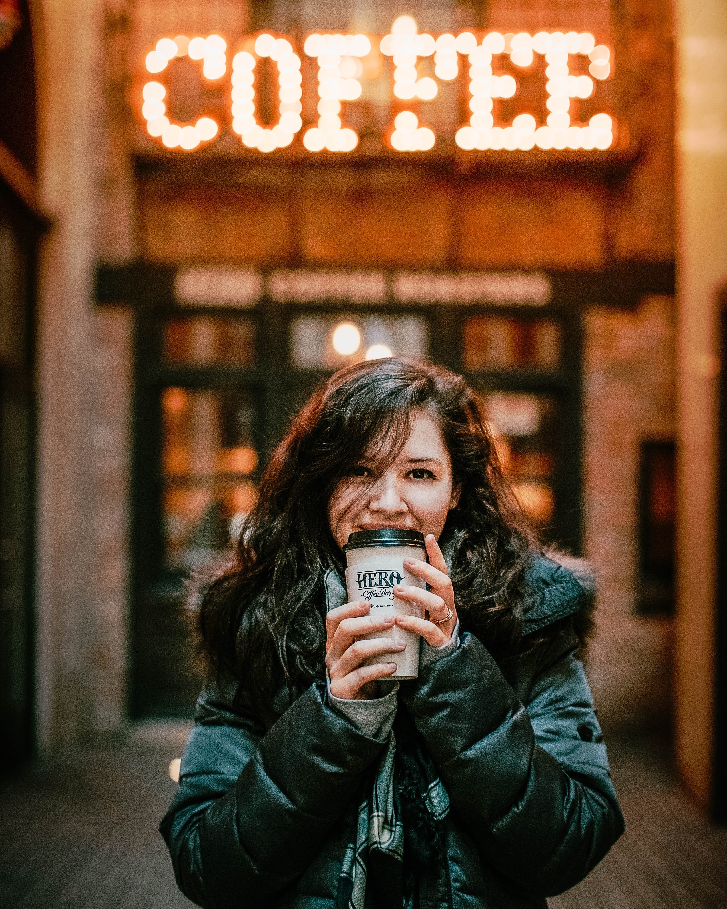
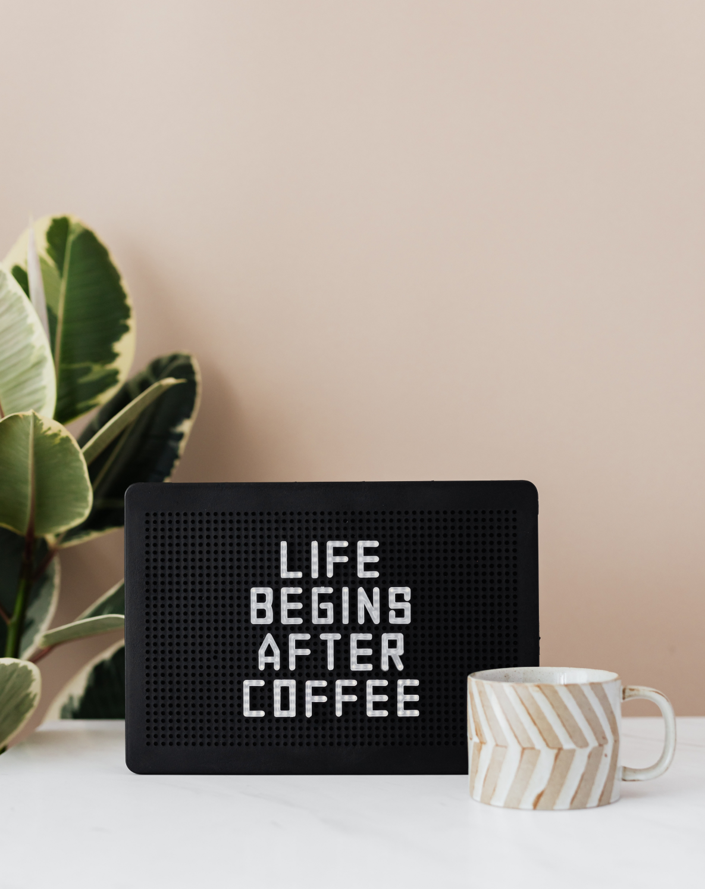

Savanna’s Coffee House

About
Savanna’s coffee was founded in 2006 by MSU graduate students Michel Bohmer and Sandy Thomas. Located in the heart of MSU’s campus town, Savanna’s is designed to be a funky destination. We serve premium products such as fresh roasted coffee and espresso drinks, hot and cold teas, grilled and cold sandwiches, and homemade soups. Not just a daytime destination! Stop by in the evening, enjoy a glass of wine or beer and listen to some live entertainment in our connected theatre space!
